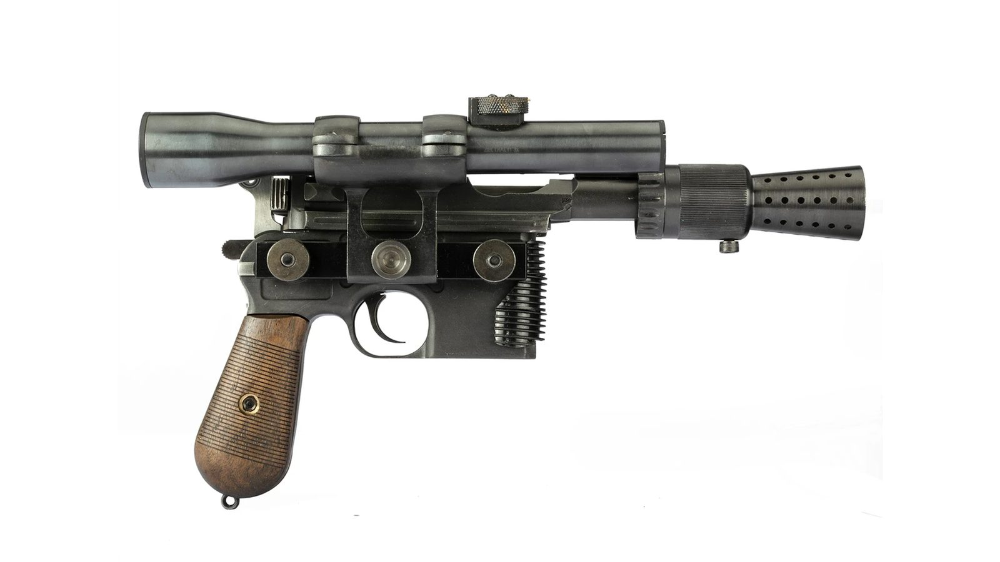

Sci-fi/Star Wars (1977)/Han’s Blaster

▦ 5 photos · ▶ 2 videosWeapon / Sci-fi
Han’s
Blaster
Han Solo’s DL-44 heavy blaster pistol in Star Wars (1977).
First seenStar Wars, 1977
ModelDL-44 heavy blaster
Carried byHan Solo
UnderneathMauser C96 pistol
Key sceneHan shoots Greedo across a cantina table in Mos Eisley.